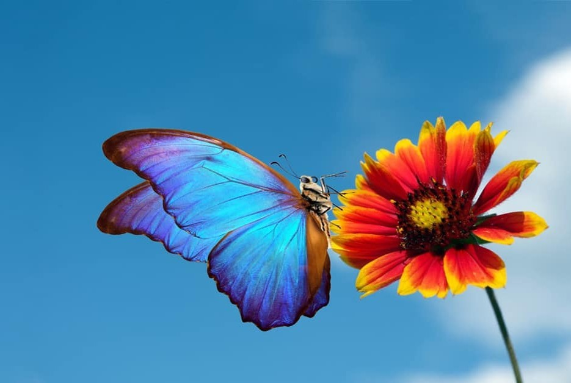

Life of a Butterfly

The life of a butterfly is a fascinating journey of transformation and growth. It begins as a tiny egg laid on a plant leaf. After a few days, the egg hatches and a caterpillar emerges. During this stage, the caterpillar spends most of its time eating leaves and growing quickly. As it grows, it sheds its skin several times before entering the next stage of its life. The caterpillar then forms a chrysalis, also known as a pupa. Inside this protective shell, an incredible transformation takes place. Over time, the caterpillar's body changes completely, forming wings, legs, and the delicate structure of a butterfly. When the transformation is complete, the butterfly emerges and spreads its wings for the first time. As an adult, the butterfly flies from flower to flower, feeding on nectar and helping pollinate plants. Although a butterfly's life is often short, it plays an important role in nature and represents beauty, change, and new beginnings.